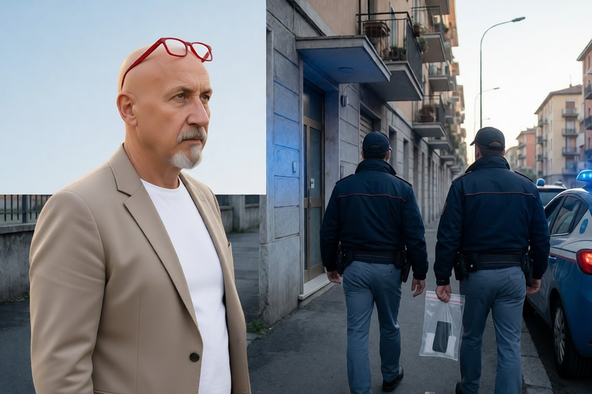

Cronaca · 2 novembre 2026
Sessanta perquisizioni in 23 città per chi incitava alla violenza nei cortei

Secondo l’accusa usavano profili social e chat per spingere altri alla violenza nelle piazze. Sequestrati undici telefoni, cinque repliche di pistole e un frangivetro. L’antiterrorismo verifica l’ipotesi di una regia.
di Franco Zanghì
Per settimane si sono visti gli scontri nelle strade. Ora gli investigatori cercano chi li avrebbe preparati lontano dalle strade, dentro un telefono.
Le perquisizioni
Sabato mattina, in 23 città italiane, la Polizia di Stato con la Digos e la Polizia postale ha perquisito circa 60 persone: Ancona, Avellino, Bari, Bergamo, Bologna, Bolzano, Brescia, Cagliari, Firenze, La Spezia, Messina, Monza, Napoli, Novara, Parma, Perugia, Ravenna, Reggio Emilia, Roma, Siracusa, Torino, Trieste, Verona.
L’accusa, come la riporta l’Ansa, è di aver usato profili social e chat per incitare a compiere violenze nelle strade di molte città. Nelle abitazioni sono state trovate cinque repliche di pistole, un frangivetro e un coltello rudimentale; sono stati sequestrati undici telefoni cellulari. Sono i telefoni, più delle armi finte, l’oggetto che interessa agli investigatori.
I numeri delle piazze
A Roma, per i cortei di venerdì, la questura ha identificato 369 persone e ne ha denunciate 7. A Torino i denunciati sono 12 e gli identificati 256. A Bologna gli identificati sono circa 300.
C’è poi un passaggio che pesa più degli altri: secondo quanto scrive il Giornale, l’antiterrorismo sta verificando se dietro gli scontri ci sia una regia della violenza coordinata, con una finalità politica. È un’ipotesi di lavoro, non un fatto accertato. Ma se trovasse conferma cambierebbe la natura di quello che si è visto nelle piazze.
Il ministro
Domenica il ministro dell’Interno, Matteo Piantedosi, ha parlato in un’intervista al Corriere della Sera. «Il diritto di manifestare è parte integrante della vita democratica e sarà sempre garantito», ha detto, aggiungendo che non è stata vietata alcuna mobilitazione e che sono state consentite anche quelle non preventivamente autorizzate. Le forze di polizia, ha spiegato, non intervengono per reprimere le opinioni. Poi ha chiesto all’opposizione unità contro i violenti.
Il punto
Quando lo Stato difende chi manifesta in pace da chi vuole trasformare un corteo in una guerriglia, va sostenuto senza esitazioni. E chi incita alla violenza da dietro uno schermo, se le accuse saranno provate, è più vile di chi la violenza la fa in strada: manda avanti gli altri e resta a casa.
Il confine, pero’, va difeso da entrambe le parti. Un messaggio arrabbiato in una chat non è un reato; organizzare un assalto lo e’. Dove passa la linea lo diranno i magistrati, caso per caso. E per chi è stato perquisito vale quello che vale per tutti: nessuno è colpevole finchè una sentenza non lo stabilisce.
Resta la domanda del ministro, in forma più semplice: condannare la violenza, senza aggiungere un «ma», costa davvero tanto? E ne resta un’altra, aperta: se l’antiterrorismo trovasse una regia, chi c’è dietro, e perchè adesso?
Fonti
- Ansa, Marco Maffettone, 31 ottobre 2026
- il Giornale, 31 ottobre 2026
- Il Fatto Quotidiano, 31 ottobre 2026
- Open, 1 novembre 2026
Le persone perquisite non risultano nominate dalle fonti. L’ipotesi di una regia coordinata è una verifica in corso dell’antiterrorismo, non un fatto accertato.